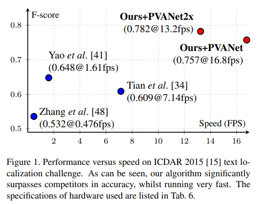
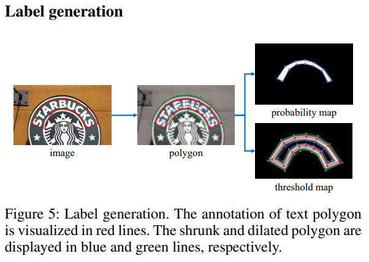
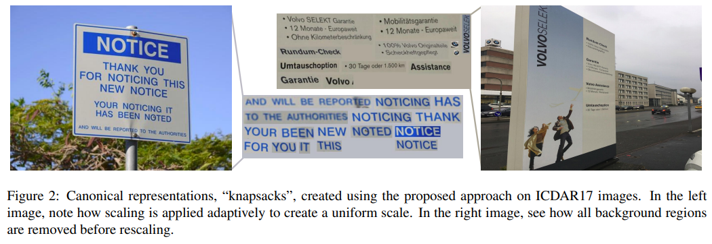

- Software 1.0 vs Software 2.0
- Lifecycle of an AI Project
- Data! Data! Data!
- OCR Technology and service
- Introduce of Text Detection
- 데이터 소개
- Annotation Guide
- 성능평가 개요
- 데이터의 중요성
- Advanced Text Detection Models
- Bag of Tricks
Software 1.0 vs Software 2.0
Software 1.0(딥러닝이 아닌 SW)
- 문제 정의
- 큰 문제를 작은 문제들의 집합으로 분해
- 개별 문제 별로 알고리즘 설계
- 솔루션들을 합쳐 하나의 시스템으로
- 예시
- TCP/IP Stack
- Android Stack
Object Detection Accuract Improvements
- (SW 1.0)2008, DPM-v1 : mAP 21.0%
- (SW 1.0)2014, DPM-v5 : 33.7%
- (SW 2.0)2020, RCNN : 58.50%
SW 2.0으로 바뀌면서 매우 빠른 발전 및 성능 향상이 이루어짐
SW 1.0 → SW 2.0으로 변화하면서, 사람이 거의 개입하지 않게 바뀜
Software 2.0
뉴럴넷 구조에 의해 검색 영역이 정해짐
따라서 SW 1.0은 사람이 고민하여 프로그램을 만든다면, SW 2.0은 AI 모델의 구조로 프로그램의 검색 범위를 한정하고, 데이터와 최적화 방법을 통해 최적의 프로그램을 찾는다
Software 1.0 + Software 2.0
전체 시스템은 SW 1.0으로 이루어저 있음
여기서 AI는 그 중 일부만(모듈)을 SW 2.0으로 이루어짐
Lifecycle of an AI Project
AI Research VS AI Production
수업, 학교, 연구에는 정해진 데이터셋 및 평가 방식에서 더 좋은 모델을 찾는 일을 함
서비스향 AI 모델 개발 과정
-
Project Setup
모델 요구사항 확정(처리 시간, 목표 정확도, 목표 qps, Serving 방식, 장비 사양)
-
Data Preparation
데이터 셋 준비(종류, 수량, 정답)
-
Model Training
모델 학습 및 디버깅(데이터 관련 피드백, 요구사항 달성)
-
Deploying
설치 및 유지보수(성능 모니터링, 이슈 해결)
Production Process of AI Model
Data-Centric → 데이터만 수정하여 모델 성능 끌어올리기
Model-Centric → 데이터는 고정시키고 모델 성능 끌어올리기
- 모델 성능 달성에서 데이터와 모델의 비중은?
-
첫 릴리즈 이전
- Data-Centric 50%
- Model-Centric 50%
-
이미 사용 중인 모델의 성능 개선 시
- Data-Centric 80%
- Model-Centric 20%
→ 서비스 출시 후 성능 개선 요구가 많음. 그러나 모델 구조 개선은 처리속도, qps, 메모리 크기 등에 대한 요구사항에 검증도 필요해서 비용이 크게 발생
-
Data! Data! Data!
Data-related tasks
-
왜 데이터와 관련된 업무가 많을까?
라벨링 결과에 대한 노이즈(작업의 일관되지 않은 정도)
잘못 작업된 라벨링 결과를 학습 시, 무시하기 위해서는 적어도 깨끗이 라벨링된 결과가 2배 이상 필요
-
자연스럽게 데이터를 모았을 때, 일반적인 샘플들은 작업자들이 자주 보기 때문에 라벨링 노이즈가 약하고 희귀한 샘플일 수록 라벨링 노이즈가 크다
Data engine / Flywheel
SW 2.0의 IDE는 무엇이 필요할까
-
데이터셋 시각화
데이터, 라벨 분포 시각화, 라벨 시각화, 데이터 별 예측값 시각화, … etc
-
데이터 라벨링
라벨링 UI, 태스크 특화 기능, 라벨링 일관성 확인, 라벨링 작업 효율 확인, Auto 라벨링
-
데이터셋 정제
반복 데이터 제거, 라벨링 오류 수정
-
데이터셋 선별
모델의 성능개선을 위해서 어떤 데이터를 가져오고 라벨링해야 할까?
OCR Technology and service
OCR Technology
OCR
-
OCR : Optical Charactor Recognition
Input Image → Text Detection → Text Recognition
Recognizer는 Computer Vision과 NLP의 교집합 영역
Input은 Image, Output은 Text
-
STR : Scene Text Recognition
Text Detector
- 글자 영역 다수 객체 검출 모델
- 이미지 입력에 글자 영역 위치들이 출력인 모델
- 내부 내용과 상관 없이, 글자 영역인지 아닌지를 판단하기 때문에 단일 클래스 문제
Text Recognizer
- 글자 영역 내 문자열 검출 모델
- 내부 문자열을 읽으므로 멀티 클래스 문제
- CV와 NLP의 교집합 영역(Input : Image, Output : Text)
Serializer
- Recognizer를 사용해서 나온 결과(문자열)을 (사람이 읽는 순서로)정렬
- 딥러닝으로 하는 경우도 있으나, 일반적으로 Rule-base로 알고리즘을 만든다
Text Parser
자연어 처리 모듈 중 가장 많이 사용되는 것은 기 정의된 key들에 대한 value 추출
- Ex : 명함을 OCR 했을 때, [Name] Key에 대한 Value, [Phone Number]에 대한 Value 추출
-
토큰화
Ex : 해,리,포,터,보,러,가,자
-
BIO(Begin / Inside / Outside) Tagging
- Begin : 관심 있는 개채의 시작
- Inside : 관심 있는 개채의 중간
- Outside : 상관 없는 요소
Ex
해(Begin-movie)
리&포&터(Inside-movie)
보&러(Outside)
메(Begin-movie)
가&박&스(Inside-Threater)
가&자(Outside)
OCR Services
Text Extractor
Copy & Paste : 이미지의 글자를 OCR, 문자열로 Copy해서 Paste 할 수 있게 해줌
Text Extractor + Natural Language Processing
Search : 사진의 OCR 결과를 가지고 있다면, 이미지 내 글자를 ‘검색’ 할 수 있음(ex: google photo)
Matching : Music playlist capture → copy & paste
금칙어 처리
번역
Key-Value Extractor
신용카드 인식 : [카드번호], [유효기간] Key에 대한 Value를 이미지에서 추출
신분증 인식 : [이름], [주민번호] Key에 대한 Value를 이미지에서 추출
Introduce of Text Detection
Basics
일반 객체 영역 검출 vs 글자 영역 검출
예측 정보의 차이
-
일반 객체 검출 : 클래스와 위치를 예측하는 문제
-
글자 검출 : Text라는 단일 클래스 위치만을 예측하는 문제
객체의 특징
- 매우 높은 밀도
- 극단적 종횡비
- 특이 모양(구겨짐, 휘어짐)
- 모호한 객체 영역
- 크기 편차
Taxonomy
SW 1.0 → SW 2.0의 과정에서 비약적인 발전이 있었음, 사람의 개입이 최소화됨
Regression-based vs Segmentation-based
Regression-based : 이미지를 입력 받아 글자 영역 표현값들을 바로 출력
-
주로 사각형 형상의 글자에 잘 작동함 bbox 표현 방식의 한계
-
Anchor box보다 더 큰 종횡비를 갖는 경우, 검출률 떨어짐
Segmentation-based : 이미지를 입력 받아 글자 영역 표현값들에 사용되는 화소 단위 정보를 뽑고, 후처리를 통해서 최종 글자 영역 표현 값들을 확보
-
복잡하고 시간이 오래걸리는 post-processing이 필요할 수 있음
-
서로 간섭이 있거나 인접한 개체 간의 구분이 어려움
Hybrid(Regression + Segmentation) : Regression으로 대략적인 영역을 구하고, Segmentation으로 해당 영역에서의 화소 정보 추출
Character-based vs Word-based
Character-based : Character 단위로 검출 및 조합하여 word instance를 예측
- Character-level GT 필요
Word-based : Word 단위로 예측
- 대부분의 모델이 해당
EAST(An Efficient add Accurate Scene Text Detector(CVPR 2017)
EAST: An Efficient and Accurate Scene Text Detector
Previous approaches for scene text detection have already achieved promising performances across various benchmarks.
https://arxiv.org/abs/1704.03155
Idea
- 네트워크가 2개의 정보를 Pixel-wise로 출력
- Score Map : 글자 영역 중심에 해당하는지
- Geometry Map : Bounding Box의 위치는 어디인지
Pipeline
-
기존의 pipeline들과 비교했을 때, 매우 단순하다
Structure
-
UNet 구조로 되어있다
Locality-Aware NMS
-
기존의 NMS : 복잡도가 O(N^2)으로 Dense Prediction 상황에 부적합
-
Idea : 인접한 픽셀에서 예측한 Bbox들은 같은 Text instance일 가능성이 높음
-
위치순서(행 우선) 탐색으로 비슷한 Bbox를 먼저 통합(IOU 기준)
-
통합 시, Score Map 값으로 Weighted merge
-
Loss Terms
-
Loss Function = Loss for score map + loss for geometry map
Paper : Class balanced cross entropy

Realtime 까지는 아니어도, 초당 17장 처리 가능
데이터 소개
Data Collection
OCR 학습 및 평가 데이터는 어디에서 오는가?
Public Dataset
-
라벨링된 실제 이미지를 손쉽게 확보 가능
-
원하는 데이터가 없을 수 있다(이미지 도메인, 라벨링 방식 등)
-
수량이 적다
Created Dataset
- Synthetic Image
- 라벨링 작업이 필요 없다
- 원하는 데이터를 빠르게 확보 가능
- 실제 데이터와 얼마나 다른지 확인 필요
- Real Image
- Crawled Image
- 빠르게 이미지를 모을 수 있다
- 고화질 이미지 확보 가능
- 다양한 샘플을 모으기 힘듬
- 라이센스에 신경써야 함
- Crowd-sourced Image
- 비용이 크고 시간이 오래 걸림
- 원하는 고품질 데이터를 얻를 수 있음
- Crawled Image
Public Dataset
서비스향 AI 모델 개발 시, 빠르게 답을 얻어야 하는 질문들
-
몇 장을 학습시키면 어느 정도 성능이 나오는가?
-
어떤 경우가 일반적이고, 어떤 경우가 희귀 케이스인가?
-
최신 모델의 한계는 무엇인가?
Dataset 얻기(OCR의 경우)
- 대회
- Kaggle OCR 관련 대회
- RRC(Robust Reading) : 2년마다 열리는 OCR 전문 대회
- 논문
- OCR Dataset 논문
- Arixv(모든 ai 논문), cvpr, iccv, aaai, icdar(OCR 전문 학회)
- 전문 사이트
-
Google Datasearch(데이터 전용 검색 플랫폼)
-
Zenodo.org
-
Datatang(데이터 유료 구매)
-
OCR Data에 포함되는 것들
Bbox
Text
don’t care area(학습시 사용 안함)
Image File Name
Image Width
Image Height
ICDAR 15 : Incidental Scene Text Dataset
풍경 이미지 속에 우연히 글자가 잡힌 경우
- 총 1500장의 이미지와 그에 해당하는 GT
- Care, don’t care로 구분하여 전사
- care : 검출할 영역
- don’t care : 검출하지 않을 영역(육안상 알아보기 힘들거나 라틴문자가 아닌 글자)
- x1,y1,x2,y2,x3,y3,x4,y4,transcription 형태로 이루어짐
ICDAR 17 : Multi-Lingual Scene Text Dataset
- Multilingual
- 9가지 언어: Chinese, Japanese, Korean, English, French, Arabic, Italian, German and Indian
- 6가지 문자: Arabic, Latin, Chinese, Japanese, Korean, Banla + Symbols, Mixed
- 총 18000장
- Train 9000(각 언어별 1000장), test 9000
- Focused Intentional Scene Text
- 우연히 찍힌 글자가 아닌, 글자 영역을 위주로 촬영된 이미지
- 글거리 표지판, 광고판, 가게 간판, 지나가는 자동차 및 웹 microblog에 올라간 유저 사진 등
- GT는 ICDAR 15와 유사
UFO(Upstage Format for OCR)
UFO란?
각각의 Public dataset의 파일 형식(json, txt, xml, csv 등)을 하나로 통합
detector, recognizer, paser 등 서로 다른 모듈에서 모두 쉽게 사용할 수 있어야 함
모델 개선을 위해 필요한 case에 대한 정보를 데이터에 포함 시킬 수 있음
UFO Format
json 파일 안에서 element 탐색에 쉽도록 graph structure를 기반으로 만들었음
Challenge Dataset
public 150장 + private 150장
- 데이터 source
- 네이버 및 구글에서 크롤링된 데이터 사용
- 상업적 활용이 가능한 license
- 데이터 annotation 방식
- UFO 포맷 사용
- Image, Word 레벨 정보만 Tagging 되어 있음
Annotation Guide
좋은 데이터셋의 선결조건, 가이드라인
가이드라인이란?
가이드라인 : 좋은 데이터를 확보하기 위한 과정을 정리해 놓은 문서
좋은 데이터 : 골고루 모여 있고, 일정하게 라벨링된 데이터
일관성을 위해, 원하는 작업을 명확하게 언급하는 것이 좋다
신경써야 할 세 가지 요소
- 특이 케이스 : 가능한면 특이케이스를 다 고려한 가이드라인이 좋음
- 단순함 : 장황하게 하지 말고, 단순하게 해야 함
- 명확함 : 작업자 별로 해석이 달라지지 않도록 명확해야 함
학습 데이터셋 제작 파이프라인
데이터셋 제작 파이프라인
- 서비스 요구 사항 → 제작 목적 설정 → 가이드 라인 제작 → Raw Image 수집 → 어노테이션(라벨링) → 모델링 → 성능 및 평가 분석
- Raw Image 수집
- Crawl Images(좋은 키워드 선정)
- License 확인
- 출처도 같이 크롤링
- 되도록 큰 이미지 수집(나중에 얼마든지 줄일 수 있음)
- Filter Images(필터링)
- 글자가 없는 이미지 필터링
- 너무 작은 이미지 필터링
- 중복 이미지 필터링
- 디지털 이미지 필터링(실사가 아닌 이미지)
- 배경이 투명인 경우 후처리
- Crawl Images(좋은 키워드 선정)
- Raw Image 수집
General OCR Dataset 예제로 알아보는 가이드라인 작성법
개요
가이드라인 제작 과정
- 가이드 작성 → 가이드 교육 → 라벨링 → 라벨링 검수 → 데이터 검수 → 가이드 작성(업데이트)
- 라벨링 검수 : 라벨링 노이즈 관점에서의 검수
- 데이터 검수 : 데이터 분포와 라벨링 노이즈 관점에서의 검수
- 초반에는 소수의 데이터를 가지고 라벨링하면서 커뮤니케이션 빈도수를 갖고 가이드라인의 틀을 어느정도 갖춘 뒤, 그 후 커뮤니케이션 빈도수를 낮추고 훈련에 사용하는 라벨 수를 높이는게 좋음
노하우
| 용어 | 설명 |
|---|---|
| HOLD | 작업을 진행하지 않고, 이미지 전첼을 제외하는 처리 |
| Points | 글자 영역에 대한 표시 방법 |
| Transcription | Points 안에 존재하는 글자 시퀸스 |
| Illegibility | 글자 번짐, 잘림 들으로 인해 글자를 정확히 알아보기 힘들 경우 모델이 의도적으로 무시하도록 표시 영역 단위의 처리로, Transcription 대상이 되는 Points처럼 타이트하게 영역을 지정할 필요는 없음 |
| Image_Tags | 이미지 자체에 특이사항이 있는 경우, 내용 표시 |
| Word_Tags | 글자 영역의 특이사항이 있는경우, 내용 표시 |
| 글자 영영 내에 글자가 있지만, 매우 특수하거나 실제로 인식하여 출력하기 어려운 글자의 경우 입력해주는 값 인식 대상이 아닌 글자(특수기호,한글, 알파벳이 아닌 글자)를 Transcription할 때 표시 |
가이드라인으로 데이터셋 구축하기
라벨링이 잘 되고 있는지 검수하는 방법
-
감독자 전수 검사
한 감독자가 본인에게 할당된 작업자의 결과물 모두 시각화하에 문제가 없는지 확인하고 문제가 있을 시에는, 문제 있는 부분을 기록하여 “다른” 작업자에게 살당
-
Peer check
끝난 작업물을 다른 작업자에게 할당하여 틀린 부분을 찾아서 고치게 함
-
다수결
여러 사람이 동일한 작업을 진행하고, 그 결과를 프로그래밍저긍로 하나로 합침
가이드 자체가 잘 동작하고 있는지를 검수
-
초기에 소량씩 완성본 받아서 품질을 확인
-
작업자 QnA 활용
-
추가 수정을 위한 비용과 시간이 크다면 어느정도 포기
가이드라인 만들기는 끝없는 의사소통과 수정의 연속
-
충분한 Tagging을 바탕으로 가이드 제작
-
가이드라인 수정 시 Versioning 필요, 기존 내용과 충돌 없도록 최소한의 변경만 할 것
-
최대한 명확하고 객관적인 표현을 사용
-
일관성 있는 데이터가 가장 잘 만들어진 데이터
-
우선순위를 알고, 필요하다면 포기하는 것도 중요
성능평가 개요
성능 평가의 중요성
성능평가 = 새로운(학습되지 않은) 데이터가 들어왔을 때 얼마나 잘 동작하는가?
Train - Test로 Dataset을 분리함
Train Set의 일부는 Validation으로 사용하기도 함
- 그러나 Validation Set을 고정할 경우, 데이터 셋의 크기가 작으면 성능 평가의 신뢰성이 떨어지 게됨 만약 Validation Set을 어떻게 잡느냐에 따라 성능이 달라진다면, 우연의 효과로 인해 모델 평가 지표에 편향이 생겨버림
-
- TrainSet을 TrainSet + ValidationSet으로 나우기 위해 K개의 Fold로 나누고 아래와 같이 k번의 Cross-Validation을 수행
- K번 수행하므로, 총 K개의 성능 결과가 나오며, K의 평균을 학습 모델의 성능으로 본다
-
정량평가 & 정성평가
정량평가 : 모델의 성능을 알고리즘을 통해 수치적으로 표현
정성평가 : 사람이 직접 수치적으로 평가(ex : bbox를 잘 맞춘 정도는? 0~1)
→ 해당 모델이 서비스로 출시 되었을 때 사람들이 체감하는 품질의 정도
글자 검출 모델 평가
두 영역 간의 매칭 판단 방법(매칭 행렬 계산) + 매칭 행렬에서 유사도 수치 계산 방법(유사도 계산)이 정의되야 함
-
두 영역 간 매칭 판단(Task에 따라 선정해야 함)
-
One-to-One Match : GT Bbox 1개에 1개가 Bbox가 Predict 됨
-
One-to-Many Match : GT Bbox 1개에 여러 개의 Bbox가 Predict 됨
-
Many-to-One Match : 여러 GT Bbox를 1개의 Bbox가 Predict로 합쳐져서 Predict 됨
-
ex : IOU, DetEval[link], TIoU, CLEval
One-to-One One-to-Many Many-to-One IoU 허용 허용 지양 (0.8로 Penalty) DetEval 허용(IoU>0.5만 1) 지양 (0으로 Penalty) 지양 (0으로 Penalty) -
CLEval(Character-Level Evaluation)
얼마나 많은 글자(Character)를 맞추고 틀렸는지로 평가
Detection 뿐 아니라 end-to-end, recognition에 대해서도 평가 가능
- 평가를 위해 Character 별 Center Position이 필요
-
PCC(Pseudo Character Centers) 알고리즘으로 글자 수를 사용해서 획득, 꽤 정확하게 구할 수 있음
-
정답영역 기준 Score : (CorrectNum - GranualPenalty) / TotalNum
일종의 Recall로 볼 수 있음
- CorrectNum : 정답 영역 내 PCC 중 어느 예측 영역이라도 속하게 된 PCC의 개수
- GranualPenalty : 정답 영역 내 PCC를 포함하는 예측 영역의 개수 - 1
- TotalNum : 정답 영역 내 PCC 개수
-
예측영역 기준 Score : (CorrectNum - GranualPenalty) / TotalNum
일종의 Precision으로 볼 수 있음
- CorrectNum : 이 예측영역이 포함하고 있는 PCC 별로, 해당 PCC를 포함하는 예측 영역의 개수로 나눈 값들의 합
- GranualPenalty : 예측 영역과 연관된 정답 영역의 개수 - 1
- TotalNum : 이 예측 영역이 포함하고 있는 PCC의 개수
-
- 평가를 위해 Character 별 Center Position이 필요
-
-
-
두 영역 간 유사도 판단
ex : Area Recall, Area Precision
데이터의 중요성
양질의 데이터를 확보하는 방법
- People
- 가이드 숙지력
- 일관된 작업
- 작업 효율성
- 특이 케이스에 대한 대응력(태스크, 모델에 대한 이해가 있는 사람들은 처음 보는 경우도 거의 동일하게 작업)
- Process
- 일관된 작업을 보장하기 위한 프로세스 정립
- 작업마다 최적의 프로세스가 다를 수 있으므로 유연성도 필요
- Tool
-
작업 효율성을 올리기 위한 UX / 자동화 / 부가 기능
-
커뮤니케이션 효율화를 위한 게시판, 댓글 기능
-
오픈소스 Labeling Tool
- LabelMe
- MIT CSAIL(Computer Science Artificial Intelligence Laboratory)에서 공개한 Image data annotation 도구를 참고하여 만든 오픈소스
- Polygon, Circle, Rectangle, Line, Point의 Annotation 수행 가능
- 장점 : 설치의 편함(Python), 커스터마이징 쉬움
- 단점 : 공동작업 불가, Object 및 Image에 대한 속성 부여 불가
- CVAT(Computer Vision Annotation Tool)
- Intel OpenVINO 팀에서 제작한 공개 CV 데이터 제작 도구
- Image Video 등 일반적인 CV Task에서 필요한 Annotation 기능을 모두 포함
- 주로 Object Detection, Image Segmentation, Image Classification 등에 사용
- 장점
- 다양한 Annotation 지원
- Automatic annotation
- 온라인 사용 가능, 오픈소스이므로 on-premise로 사용도 가능
- Multi-user 기반 annotation 가능, assignee, reviewer 기능 제공
- 단점
- model inference가 느림(CPU)
- object, image에 대한 속성을 부여하기 까다로움
- Hasty Labeling Tool
- CVAT와 유사, 그러나 Annotation은 전체 솔루션의 일부
- 데이터 제작 / 모델학습 / 서빙 / 모니터링까지 전체를 쉽게 할 수 있는 솔루션 제공
- 장점
- 다양한 Annotation을 지원
- Semi-Automated Annotation 기능 지원
- Cloud Storage 활용 가능
- Multi-user 기반 annotation 가능, assignee, reviewer 기능 제공
- 단점
-
Free credit 소진 후에는 과금 필요
-
Annotator가 수동으로 이미지마다 review, stats로 변경 필요
-
Hasty 플랫폼에 강하게 연결되어 있어, Annotation 도구에 대한 커스터마이징 불가능
-
Upstage Labeling Tool과 비교
Advanced Text Detection Models
DBNet(Real-Time Scne Text Detection with Differentiable Binarization, AAAI 2020)
Real-time Scene Text Detection with Differentiable Binarization
Recently, segmentation-based methods are quite popular in scene text detection, as the segmentation results can more accurately describe scene text of various shapes such as curve text.
https://arxiv.org/abs/1911.08947
Idea : Adaptive thresholding
→ 글자 영역 구분에 Threshold 값을 이미지 별로 모델이 일아서 정하도록 해보자
Strategy
- 글자 영역 경계 부분에서만 높은 임계치를 적용, 나머지 영역은 낮은 임계치를 적용
- 글자영역은 경계부분을 제외한 영역으로 정의

그러나 기존의 Threshold는 미분 불가능
→ Differentiable Binarization 제안
Differentiable Binarization
Loss
- BCE Loss
- Segmentation map + Binarization ↔ GT Probability map
- L1 Loss(Threshold Map ↔ GT Threshold Map
- GT Probability Map에서 image processing을 사용하여 생성
MOST(A Multi-Oriented Scene Text Detector with Localization Refinement, CVPR 2021)
MOST: A Multi-Oriented Scene Text Detector with Localization Refinement
Over the past few years, the field of scene text detection has progressed rapidly that modern text detectors are able to hunt text in various challenging scenarios.
https://arxiv.org/abs/2104.01070
기존 EAST 모델의 특징
- 단순하고 빠름
- Extreme aspect ratio sample에 대해 성능이 많이 떨어짐
-
Receptive Field의 한계
-
LA-NMS의 문제점
-
Most : EAST의 보완된 버전

-
TFAM(Text Feature Aligned Module)을 추가 Receptive Field를 극복
- Deformable Convolution 사용
-
PA-NMS(Position-Aware NMS) NMS에 필요한 글자 영역 내 화소들의 상대 위치 정보를 받아서, 검출 결과에 PA-NMS 적용
겹치는 부분, 침범하는 부분 등 많은 문제에 대해서 성능 향상을 이룸
TextFusionNet(Scne Text Detection with Richer Fused Features, IJCAI 2020)
Info
Pipeline
-
Semantic Segmentation Branch : 이미지 전체에서 글자 영역을 추출, Global Level Feature 획득
-
Detection Branch : 글자 영역별로 Global / Word Level Feature를 활용, 글자영역 검출과 글자 위치 검출
-
Mask Brahcn : Global / Word / Character Level Feature를 활용하여 글자영역 추출과 글자 추출
Training
Text Fusion의 Detection Branch 학습을 위해서는 글자 단위의 Labeling이 필요
→ Weakly supervised learning 사용
-
SynthTest(Full-supervision) pretraining
글자단위 label 확보가 가능한 합성 데이터로 먼저 학습
-
Pseudo Labeling
GT 단어영역 넓이에 비해 예측 영역과 GT 단여 영역 간의 IOU가 0.8 보다 큰 Pseudo Label만 학습에 사용
-
Fine-tuning
Bag of Tricks
Synthetic Data
성능 향상에 있어서 가장 중요한 것은 Data
그러나 Real Data를 확보하는 것은 어려운 일
→ Real Data 확보 : Public Data 가져오기 + 직접 만들기
직접 만들 경우, Annotation을 직접 만들어야 함
→난이도가 높고, 비용이 많이 들어가는 작업
Synthetic Data(합성 데이터) : Real Data 수집에 대한 부담을 덜어준다
- 장점 : 비용이 훨씬 적게 든다
- 개인정보나 라이센스에 관한 제약으로부터 자유롭다
- 더 세밀한 수준의 annotation도 쉽게 얻을 수 있다(Character-level, pixel-level)
SynthText
Synthetic Data for Text Localisation in Natural Images
In this paper we introduce a new method for text detection in natural images.
https://arxiv.org/abs/1604.06646
Synthetic Data for Text Localisation in Natural Images, CVPR 2016 논문과 함께 데이터셋 발표
800K Dataset + 글자 이미지 합성 코드 제공
현실에 있을법한 위치에만, 표면 모양에 맞춰 글자를 합성
→ Depth Estimation 수행
SynthText3D
SynthText3D: Synthesizing Scene Text Images from 3D Virtual Worlds
With the development of deep neural networks, the demand for a significant amount of annotated training data becomes the performance bottlenecks in many fields of research and applications.
https://arxiv.org/abs/1907.06007
3D 가상 세계를 이용한 텍스트 이미지 합성
이미 Geometry 정보를 갖고 있기 때문에 더 쉽게 합성 가능
World 선택 → View Setting → Illumination Setting으로 다양한 Synthetic Image 생성 가능
UnrealText
UnrealText: Synthesizing Realistic Scene Text Images from the Unreal World
Synthetic data has been a critical tool for training scene text detection and recognition models.
https://arxiv.org/abs/2003.10608
SynthText3D와 매우 유사, UnrealText는 기존 SynthText3D에서 View의 설정을 자동화
- 기존 SynthText3D에서 사람이 직접 View를 생성한 이유는 현실에 존재할 수 없는 View가 생기는 것을 방지하기 위함
- UnrealText는 View 설정을 자동화 하면서도, 현실에 존재할법한 View를 생성
Unreal Text는 존재할만한 View를 자동으로 생성
How to Use
- Pretraining
- Target Dataset만 존재할 때
- IamgeNet pretrained model로 부터 backbone load
- Taget dataset에 대해 fine-tuning 진행
- 합성 데이터가 주어졌을 때
- ImageNet pretrained model로 부터 backbone load
- Synthetic Dataset으로 한번 더 pretraining
- Target dataset에 대해 fine-tuning 진행
- Target Dataset만 존재할 때
- Weakliy Supervised Learning
- Charactor-level detection을 수행하는 모델
- CRAFT, TextFuseNet 등
- Real Dataset은 대부분 Word-level Annotation만 포함하기 때문에 Full supervision이 힘듬
- Charactor-level detection을 수행하는 모델
Data Augmentation
Geometric Transformation
Augmentation이 모델의 False-Positive를 유발하지 않기 위한 Rule 예시
- Positive ratio 보장 : 최소 1개의 개체를 포함해야 한다
- 발생하는 문제 : 글자와 멀리 있는 배경에서는 hard negative sampling이 잘 되지 않는다
- 시도해볼 수 있는 해결방법 : pretrained model이 false positive를 발생시키는 patch를 수집한다(=Hard negative mining)
- 개체 잘림 방지 : 잘리는 개체가 없어야 한다
- 발생하는 문제 : 글자들이 많이 밀집된 곳에서는 Sampling이 잘 되지 않는다
- 시도해볼 수 있는 해결방법 : 최소 1개의 개체는 잘리지 않고 포함하게 한다, 잘린 것들은 Masking을 통해 학습에서 무시한다
실전
도메인 특징에 따라 다양한 문제가 발생할 수 있음
- 실제로 모델에 입력되는 이미지 관찰 필요
- Loss가 크게 발생하는 영역들을 분석해서 Rule을 업데이트하는 작업이 필요
Others
Large Scale Variation
이미지에서 글자는 매우 다양한 크기로 나타남
Scale Variation은 난이도를 높이는 주요 원인
작은 글자들 : Miss detection
큰 글자들 : Broken / partial detection 발생
SNIP : Scale Normalization for image Pyramid
-
Scale augmentation을 적용하나 개체의 크기가 적정 범위를 벗어나지 않도록 제한
-
크기가 적정 범위를 벗어난 개체들에 대해서는 gradient 전파를 하지 않는 방식으로 학습에서 제외
Adaptive Scaling
It's All About The Scale -- Efficient Text Detection Using Adaptive Scaling
“Text can appear anywhere”.
https://arxiv.org/abs/1907.12122
- 이미지에서 글자가 있을법한 영역만, 글자가 적정 크기로 나타나도록 조정해서 모델에 입력
-
글자의 위치와 크기를 대략적으로 예측
- Seg Mask 예측 : 글자가 있는 위치에 대한 Pixel wise map
- Scale Mask 예측 : 글자 Scale에 대한 Pixel wise map
-
그 결과를 기반으로 재구성한 이미지를 다시 입력

- Canonical knapsacks을 생성(텍스트들만들 다시 짜집기하여 만든 새로운 이미지)
-
Canonical knapsacks 이미지에서 예측 수행
- Canonical knapsacks 이미지는 적은 배경만을 갖기 때문에 매우 경제적
- 글자들의 크기가 적정 크기로 통일되기 때문에 Scale Variation으로 인한 성능 저하가 없음